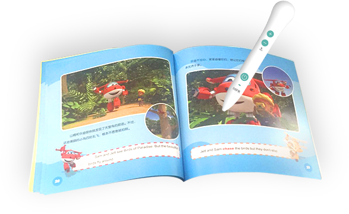

什么是MRP出版物？
MPR（Multimedia Print Reader）出版物是一种以唯一性关联编码为基础，以特定样式的MPR二维码为识别符号，对多种出版载体和表现形式进行整合和精确关联，形成以纸质印刷载体为基础的多媒体复合数字出版形态的一种出版物。
MPR出版物由MPR书报刊、MPR数字媒体文件和使二者精确关联的MPR码三个基本要素构成。
什么是MPR出版物（全媒版）？
印有【链码】的MPR出版物称为MPR出版物（全媒版），封面上印有MPR Logo 。
封面有MPR Logo的出版物都可以扫链码吗？
只有MPR出版物（全媒版）支持扫链码。
MPR出版物分为两类：
①MPR出版物(全媒版)印刷的是链码，它的外观类似双下划线，用手机登录设备扫链码能够获取纸质媒体关联的图文、音频、视频、3D、H5等多种格式的数字内容。
②MPR出版物(点读版)印刷的是近于隐形的矩阵式二维码，通过连接MPR识读器点触出版物上的MPR码，播放被标识内容关联的音频或视频多媒体数字内容。
MPR出版物(全媒版)

MPR出版物(点读版)
为什么“出版物-链码目录”只能试看部分内容，不能查看全部内容？
因为链码资源是与印刷的MPR出版物内容相关联，目的是纸电关联阅读，使用扫码功能查看链码资源。根据发布者设置，有一部分出版物可以播放前两个链码关联的资源示例。
MPR出版物(全媒版)在哪里买？
请通过第三方平台进行购买印有【链码】的纸书，如亚马逊、京东、当当，或到线下书店等。报纸请在报刊书亭购买。
购买MPR出版物(全媒版)请先认准图书封面的MPR Logo ，并确认书中印刷的码是“链码”。
支持链码的MPR出版物(全媒版)，可以在本APP出版物列表中进行查看。